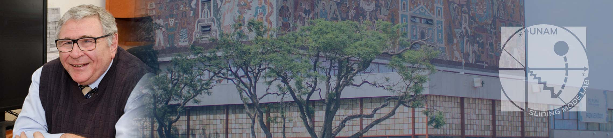
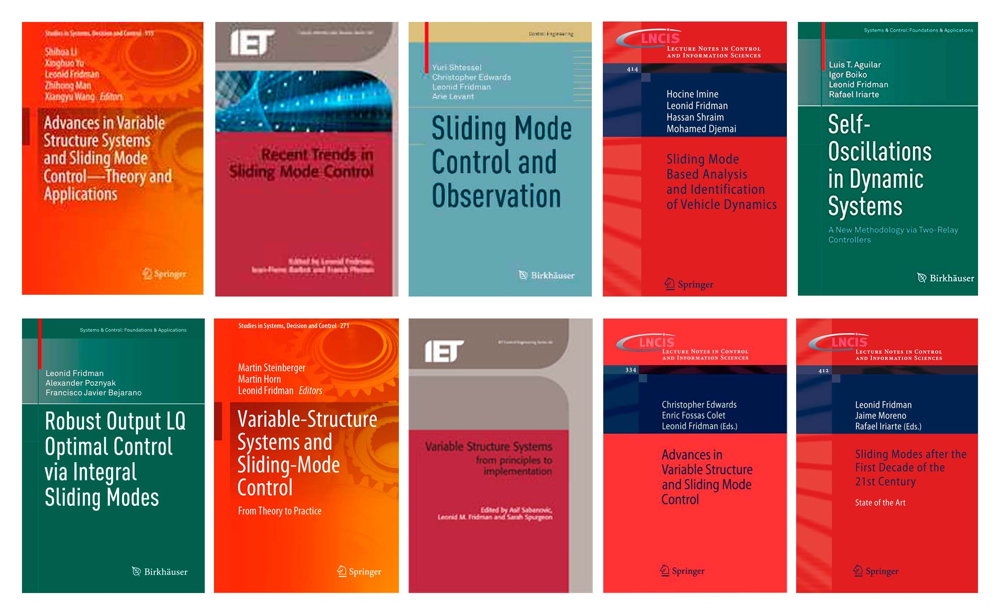

Dr. Leonid Fridman
Doctor of Science in Control, Moscow State University of Mathematic and Electronics (MIEM) 1998
Ph.D. in Applied Mathematics, Institute of Control Science (Moscow) 1988
M.Sc. in Mathematics, Kuibyshev University 1976
Desde febrero de 2002 se ha desempeñado como profesor titular “C” en la Facultad de Ingeniería FI, de la Universidad Nacional Autónoma de México (UNAM). Mantiene el máximo nivel de estímulo en el Programa de Primas al Desempeño del Personal Académico de Tiempo Completo (PRIDE) de la Dirección General de Asuntos del Personal Académico (DGPA) de la UNAM y es miembro del Sistema Nacional de Investigadores (SNI) del Consejo Nacional de Ciencia y Tecnología (CONACYT) con el nivel III.
Libros

Contacto:
- lfridman@unam.mx
- Edificio T; Cubículo T2-16